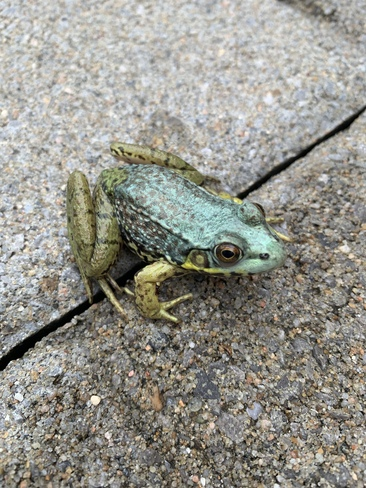

Page Web Biographique - Un peu sur moi
- Introduction
- Passe-temps
- Languages de programmation
Bonjour! Je m'appelle Grace Green. Bienvenue à ma page web biographique. J'aime bien la nature, mon animal préféré est la grenouille.

Dans mon temps libres j'aime bien :
| Languages |
Compétences |
| HTML |
- Titres et paragraphes
- Mise en évidence de texe
- Retour de ligne
- Images
- Listes
- Liens internes & externes
- Commentaires
|
Retour à la page d'accueil